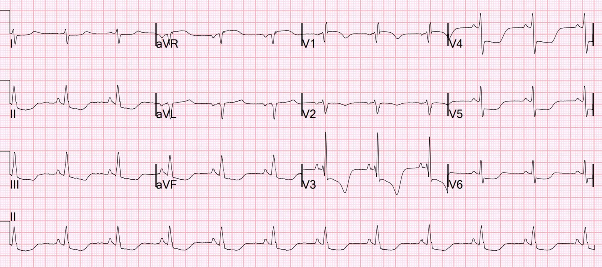
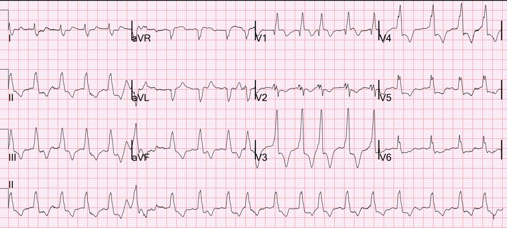
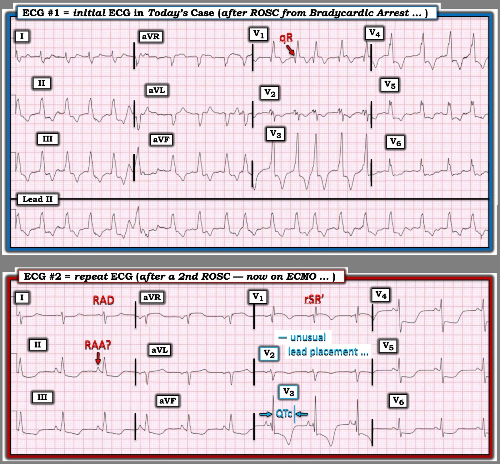

04/01/2026 — Đợt cấp COPD, sau đó ngừng tim
Bản dịch tiếng Việt của bài "COPD exacerbation, followed by cardiac arrest." – Dr. Smith’s ECG Blog. Giữ nguyên toàn bộ 3 hình ảnh của bản gốc.


Một phụ nữ lớn tuổi gọi 911 vì khó thở (SOB). Bà có tiền sử COPD. Khi đội cấp cứu tới, bà tím tái và tăng công thở. Trên đường tới bệnh viện, bà bị ngừng tim kiểu nhịp chậm (bradycardic arrest).
Bà được tái lập tuần hoàn tự nhiên (ROSC), và siêu âm tim tại giường cho thấy thất phải (RV) lớn và thất trái (LV) rất nhỏ. Các bác sĩ điều trị đưa ra chẩn đoán tạm thời là thuyên tắc phổi dựa trên bệnh cảnh lâm sàng này.
Đây là điện tâm đồ đầu tiên:


Bạn nghĩ gì?
Có rung nhĩ. Có RBBB kèm trục lệch phải (sóng S sâu ở I, với tỷ lệ R/S < 1), gồm cả một blốc phân nhánh trái sau (left posterior fascicular block) có lẽ có. Biên độ sóng R ở các chuyển đạo trước tim bên phải rất lớn. Tôi thấy bản ghi này trên hệ thống điện tâm đồ trước khi biết gì về ca bệnh và đã nghĩ rằng nhiều khả năng đây là phì đại thất phải (RVH)
Tiếp tục:
Bà lại ngừng tim và được dùng tPA vì nghĩ tới thuyên tắc phổi. Bà cũng được đặt ECMO.
Bà được ghi thêm một điện tâm đồ khác:

RBBB không còn nữa, vì thời gian QRS dưới 120 ms. Quan trọng hơn, sóng R’ ở V1 hoàn toàn không rộng. Nhưng nó có biên độ rất lớn! Trục lệch phải lại xuất hiện (sóng S sâu ở chuyển đạo I), và không thể đổ cho RBBB. Có sóng R lớn ở V1; tỷ lệ R/S > 1. Điều này có giá trị chẩn đoán RVH (phì đại thất phải).
Dĩ nhiên cũng có ST chênh xuống lan tỏa rất nhiều, có giá trị chẩn đoán thiếu máu cục bộ dưới nội tâm mạc lan tỏa, vốn điển hình ở một trái tim sau ROSC.
Đã chụp CT và không thấy thuyên tắc phổi.
Troponin I tăng lên trên 60.000 ng/L. Chụp mạch vành âm tính.
Siêu âm tim chính thức cho thấy phì đại thất phải nặng.
Các bác sĩ điều trị đã không bao giờ nhận ra các dấu hiệu trên điện tâm đồ, vốn rất đặc hiệu cho RVH.
Nhận ra RVH có lẽ cũng không làm thay đổi xử trí bệnh nhân này, vì có thể có thuyên tắc phổi chồng thêm. Nhưng trong nhiều trường hợp, nhận ra RVH rất hữu ích. Bệnh nhân này có COPD, bệnh gây ra tâm phế mạn và tăng áp phổi. Người có RVH có nguy cơ ngừng tim cực kỳ cao, đặc biệt khi bị thiếu oxy hoặc tụt huyết áp. Cơn ngừng tim hoàn toàn phù hợp với RVH + đợt cấp COPD nặng. Biết điều đó có thể ảnh hưởng tới quyết định dùng thuốc tiêu sợi huyết.
RVH hiếm khi được nhận ra trên điện tâm đồ. Điện tâm đồ RẤT hữu ích để chẩn đoán phân biệt một thất phải lớn trên siêu âm tại giường, giữa PE và RVH, vì PE chỉ cho thấy tăng gánh tim phải cấp, còn RVH có sóng R lớn ở V1. (V1 được đặt ngay trên thất phải; sóng R ở đây chỉ lớn lên khi có RVH mạn tính, không phải khi tăng gánh tim phải cấp).
Có lần tôi xem một bài giảng của một trong những chuyên gia hàng đầu cả nước về suy thất phải (RV Failure), Susan Wilcox. Bà trình bày một số ca suy thất phải đã bị bỏ sót chẩn đoán. Trong mọi ca mà bà có đưa điện tâm đồ (theo tôi nhớ thì là 4 ca), điện tâm đồ đều cho thấy RVH, nhưng Dr. Wilcox đã không nhận ra điều đó. Tôi đã liên hệ với bà về việc này để lưu ý bà, và quả thật bà đã không nhận ra. Bà rất nhã nhặn và cảm kích khi được biết điều này.
Xem thêm các ca RVH khác:
What does the ECG show in this patient with chest pain, hypotension, dyspnea, and hypoxemia? (Điện tâm đồ cho thấy gì ở bệnh nhân đau ngực, tụt huyết áp, khó thở và giảm oxy máu này?)
Dyspnea and chest pain. O2 saturation 88%. (Khó thở và đau ngực. Độ bão hòa O2 88%.)
An elderly woman with shortness of breath and an ECG that helps understand it (Một phụ nữ lớn tuổi khó thở và một điện tâm đồ giúp hiểu được tình trạng đó)
21 year old woman with CP, SOB, then syncope, and with ST depression with T-wave inversion in V1-V3 (Phụ nữ 21 tuổi đau ngực, khó thở, rồi ngất, kèm ST chênh xuống và sóng T đảo ngược ở V1-V3)
ST Depression and T-wave inversion in V2 and V3. (ST chênh xuống và sóng T đảo ngược ở V2 và V3.)
A 50-something male with Dyspnea (Một nam giới khoảng 50 tuổi bị khó thở)
This was texted to me by a former resident. An 80-something woman who presented with chest pain and dyspnea. (Một cựu bác sĩ nội trú nhắn tin gửi tôi ca này. Một phụ nữ khoảng 80 tuổi đến khám vì đau ngực và khó thở.)
What is going on in V2 and V3, with a troponin I rising to 1826 ng/L at 4 hours? (Chuyện gì đang xảy ra ở V2 và V3, với troponin I tăng lên 1826 ng/L sau 4 giờ?)
55 year old woman with chest pain and precordial T-wave Inversions (Phụ nữ 55 tuổi đau ngực và sóng T đảo ngược ở các chuyển đạo trước tim)
======================================
BÌNH LUẬN CỦA TÔI, bởi KEN GRAUER, MD (4/1/2026):
Ca hôm nay làm nổi bật điểm sau của Dr. Smith:
- Chẩn đoán RVH trên điện tâm đồ thường khó — và đơn giản là không được nghĩ tới. Kết quả là — nó bị bỏ sót, điều mà quá thường xuyên dẫn tới những hệ quả lâm sàng đáng tiếc.
= = =
RVH thường bị bỏ sót …
Tôi đã nhiều lần trình bày “Quan điểm của tôi” về lý do vì sao chẩn đoán RVH trên điện tâm đồ lại thường bị bỏ sót đến vậy (Xem bài ngày 12 tháng Hai năm 2023) — trong đó không thể không kể đến:
- i) “Con mắt y khoa” của chúng ta đã quen tìm LVH, vốn ở người lớn phổ biến hơn RVH rất nhiều; — và,
- ii) Để thất phải — về giải phẫu nhỏ hơn và mỏng hơn nhiều — phì đại đủ mức ở người lớn để vượt qua được ưu thế của các lực điện thất trái, thì RVH kèm tâm phế mạn thường đã tiến triển tới giai đoạn rất muộn (điều này rất khác với quá trình hình thành RVH ở trẻ nhỏ mắc bệnh tim bẩm sinh — ở các em, RVH là dấu hiệu thường gặp và dễ thấy hơn nhiều trên điện tâm đồ).
= = =
Chẩn đoán RVH trở nên phức tạp khi có RBBB …
Chẩn đoán RVH trên điện tâm đồ còn khó hơn nữa khi có RBBB hoàn toàn (blốc nhánh phải). Lý do là tiêu chuẩn sóng R chiếm ưu thế ở chuyển đạo V1 bị cân trừ về mặt điện học bởi rối loạn dẫn truyền của RBBB, trong đó một thất phải về giải phẫu nhỏ hơn nhiều vẫn có thể tạo ra một sóng cao một cách đánh lừa trên điện tâm đồ (tức là sóng R ở chuyển đạo V1) khi thất phải bị bỏ lại khử cực một mình sau khi thất trái đã khử cực xong (đó chính là điều xảy ra khi có RBBB).
- Tiêu chuẩn điện tâm đồ mà tôi thấy được trích dẫn nhiều nhất để chẩn đoán RVH khi đồng thời có RBBB hoàn toàn — là sóng R’ ở chuyển đạo V1 ≥10-15 mm. Theo kinh nghiệm hàng chục năm tìm RVH kèm RBBB của tôi (lấy đối chiếu siêu âm tim làm tiêu chuẩn “vàng”) — tiêu chuẩn biên độ R’ ở chuyển đạo V1 này đi kèm với khá nhiều trường hợp dương tính giả và âm tính giả.
- Tìm RVH trên điện tâm đồ ở bệnh nhân có RBBB không hoàn toàn (mà tôi định nghĩa là hình ảnh rbbb với thời gian QRS <0,11 giây) — thì dễ hơn, vì biên độ sóng R’ ở chuyển đạo V1 tăng đáng kể (tức là lớn hơn 5-10 mm) — đặc hiệu hơn cho RVH khi có RBBB không hoàn toàn, bởi thất phải khử cực không bị các lực thất trái đối kháng ở mức độ gần như khi có RBBB hoàn toàn.
- Sự hiện diện của RAD (trục lệch phải), trong đó sóng S chiếm ưu thế ở chuyển đạo I — ủng hộ RVH thật sự khi đi kèm RBBB không hoàn toàn hơn nhiều so với khi đi kèm RBBB hoàn toàn (Nói đơn giản — sóng S tận rộng ở chuyển đạo I vốn là điều được dự kiến, như một phần thiết yếu của tiêu chuẩn RBBB — vì dấu hiệu này chủ yếu phản ánh sự khử cực thất phải phần cuối không bị đối kháng, chứ không phản ánh kích thước thất phải).
= = =
Áp dụng vào các điện tâm đồ hôm nay …
Với nền tảng ở trên — tôi thấy việc đánh giá 2 điện tâm đồ hôm nay thật thú vị. Để rõ ràng và dễ so sánh — tôi đã sao lại và đánh nhãn 2 bản ghi này trong Hình 1.
- Như Dr. Smith đã nêu — nhịp trong điện tâm đồ #1 tương đối nhanh và không đều hoàn toàn, không có sóng P = AFib với đáp ứng thất hơi tăng (tần số trung bình hơi trên ~110/phút).
- RBBB hoàn toàn được chẩn đoán ở điện tâm đồ #1 dựa vào thời gian QRS giãn rộng ( = 0,12 giây trong bản ghi này) với sóng R chiếm ưu thế ở chuyển đạo V1 + sóng S tận rộng ở chuyển đạo bên I (sóng S này ở chuyển đạo I không đủ sâu để đạt tiêu chuẩn LPHB).
- Sự hiện diện của AFib khiến chúng ta không thể dùng dấu hiệu bất thường nhĩ phải (RAA) làm tiêu chuẩn hỗ trợ cho RVH (Để ôn lại cách tiếp cận của tôi trong chẩn đoán RAA, cũng như LAA, trên điện tâm đồ — BẤM VÀO ĐÂY).
- Tuy nhiên — trong bối cảnh RBBB, việc mất sóng r dương khởi đầu, tạo thành hình ảnh qR ở chuyển đạo V1, gợi ý có tăng áp phổi! (Xem Hình 2 trong phần Bình luận của tôi ở cuối trang của bài ngày 12 tháng Hai năm 2023 để xem phần bàn luận có minh họa về lý do vì sao lại như vậy).
- Tôi thấy phức bộ QRS nhỏ xíu, nhiều pha ở chuyển đạo V2 trông “lạc lõng” so với hình dạng của các chuyển đạo ngực còn lại ở điện tâm đồ #1 (nhiều khả năng nhất là hậu quả của việc đặt điện cực không chính xác — dù là do bệnh nhân là nữ hay do giải phẫu của COPD giai đoạn muộn).
- Biên độ sóng R rất lớn ở chuyển đạo V3 — và chắc chắn có thể phản ánh RVH rõ rệt (dù tôi không biết có tiêu chuẩn điện tâm đồ nào cho RVH dựa trên biên độ sóng R ở chuyển đạo V3).
- Cuối cùng — tôi diễn giải tình trạng ST-T chênh xuống lan tỏa và rõ rệt, nặng nhất ở các chuyển đạo dưới và trước, là có thể phù hợp với “tăng gánh” thất phải (dù khó phân biệt “tăng gánh” thất phải với ảnh hưởng mà AFib mới xuất hiện, khá nhanh có thể gây ra trên sóng ST-T).
ĐIỀU CỐT LÕI: RVH ở người lớn là một chẩn đoán khó đưa ra nếu chỉ dựa vào điện tâm đồ. Đặc biệt khó chẩn đoán khi đi kèm RBBB hoàn toàn (và nhất là khi nhiều khả năng có sai sót trong đặt điện cực ngực).
- Dù đã nói vậy — tiền sử COPD đã biết của bệnh nhân này, nay kèm khó thở cấp, tím tái và ngừng tim kiểu nhịp chậm, rõ ràng khiến bà dễ có RVH — đặc biệt với dấu hiệu điện tâm đồ là hình ảnh qR ở V1 ( = tất cả các nhận xét trên đều ủng hộ quan niệm lâm sàng rằng RVH trên điện tâm đồ là một “chẩn đoán kiểu thám tử” — không được đưa ra dựa trên bất kỳ một dấu hiệu điện tâm đồ đơn lẻ nào — mà phụ thuộc vào bối cảnh lâm sàng kết hợp với mọi dấu hiệu điện tâm đồ tìm thấy trên bản ghi).
- Tôi nghĩ điện tâm đồ #1 rõ ràng có thể phù hợp với PE cấp — vì AFib mới xuất hiện là một rối loạn nhịp không hiếm gặp trong tình huống này, nhất là ở bệnh nhân COPD lâu năm dễ có sẵn RVH từ trước.
- Siêu âm tim tại giường nhanh chóng xác nhận nhận định RVH trên điện tâm đồ (dù kèm thất trái rất nhỏ). CT ngực sau đó xác nhận không có PE cấp.
= = =
Hình 1: Tôi đã sao lại và đánh nhãn 2 điện tâm đồ trong ca hôm nay.


= = =
Điện tâm đồ ghi lại hôm nay …
Điện tâm đồ ghi lại trong ca hôm nay được ghi sau ROSC, sau lần ngừng tuần hoàn hô hấp thứ 2 (với điện tâm đồ #2 được ghi sau khi bệnh nhân đã được đặt ECMO). Các chi tiết lâm sàng khác không được đối chiếu theo thời gian — khiến chúng ta phải tự hỏi về lý do của một số khác biệt rõ rệt giữa điện tâm đồ #2 và điện tâm đồ #1.
- Nhịp xoang đã được phục hồi ở điện tâm đồ #2. Dù sóng P dương ở chuyển đạo II không đạt tiêu chuẩn điện thế biên độ ≥2,5 mm cho RAA (bất thường nhĩ phải) — hình dạng nhọn rõ rệt của sóng P dương ở các chuyển đạo II, III và aVF vẫn gợi ý mạnh RAA trong bối cảnh lâm sàng này.
- QRS ở điện tâm đồ #2 không còn rộng nữa (tôi đo được thời gian 0,10 giây). Giờ đây có hình ảnh ba pha (rSR’) rõ ở chuyển đạo V1 — với sóng S tận (dù hẹp) ở các chuyển đạo bên I và V6 ==> do đó phù hợp với RBBB không hoàn toàn.
- Trong bối cảnh phức bộ QRS có thời gian bình thường — QRS chủ yếu âm ở chuyển đạo I rõ ràng cho thấy RAD (trục lệch phải).
- Một lần nữa lại có gợi ý mạnh về đặt sai vị trí điện cực ở chuyển đạo V2 — với hình ảnh rS biên độ nhỏ ở chuyển đạo này, theo tôi là không hợp lý khi cả hai chuyển đạo kế bên đều có dạng ba pha giống rbbb ( = chuyển đạo V1 và V3).
ĐIỀU CỐT LÕI: Nếu chỉ nhìn điện tâm đồ #2 — tôi sẽ diễn giải bản ghi này là nhịp xoang + RVH (trong bối cảnh lâm sàng có bệnh phổi nặng đã biết, với các dấu hiệu IRBBB, RAD và RAA trên điện tâm đồ). Một lần nữa — biên độ R’ ở chuyển đạo V3 rất lớn (dù ý nghĩa của dấu hiệu này chưa chắc chắn).
- Tôi sẽ rất tò mò về mặt chuyên môn vì sao QRS lại đột ngột hẹp đi như vậy — đặc biệt là với sự mất đi của hình ảnh qR ở chuyển đạo V1 (? huyết động cải thiện rõ rệt nhờ ECMO được bắt đầu sau lần ngừng tuần hoàn hô hấp thứ 2?).
- Cuối cùng — QTc giờ đây kéo dài rõ rệt ở điện tâm đồ #2, đi kèm với ST chênh xuống lan tỏa ấn tượng. Điều này phản ánh thiếu máu cục bộ sau hồi sức hay tổn thương thần kinh trung ương (CNS) sau lần ngừng tuần hoàn hô hấp thứ 2 thì chưa chắc chắn.
- Hy vọng bệnh nhân đã hồi phục …
= = =
= = =